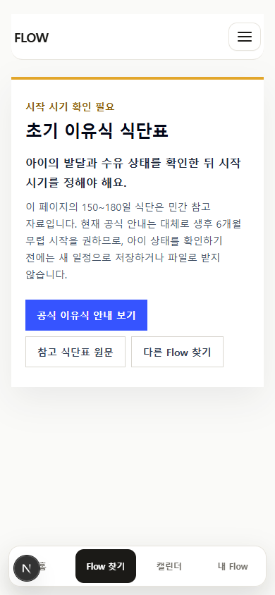
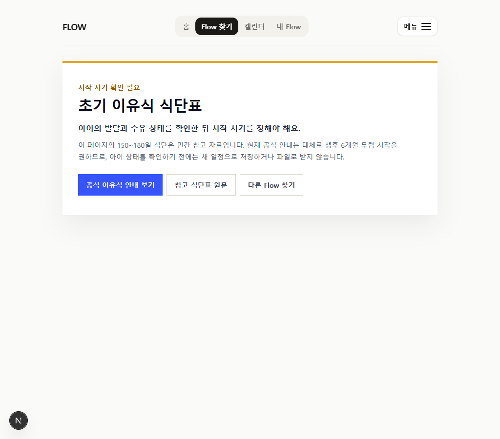
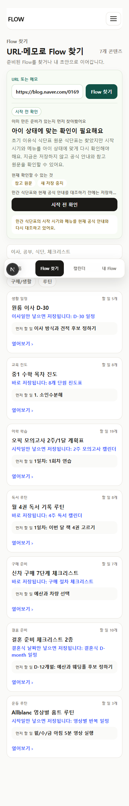
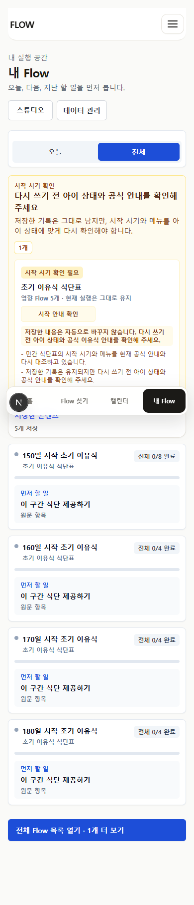

2026-07-12 source-fit review
초기 이유식 식단표를 새 실행에서 보류했습니다
최근에 링크를 확인했다는 날짜와 원문의 실제 유효성은 다릅니다. 민간 식단표의 150·160·170·180일 시작안을 현재 공식 안내와 대조한 결과, 아이 상태 확인 없이 캘린더 실행안으로 제공하지 않기로 했습니다.
5보류한 의료 민감 실행 route
16 → 11미감사 공개 실행 route
1남은 고위험 미감사 실행
4모바일·wide screenshot
판정
원문과 기존 저장본은 보존하고, 새 저장·실행·export만 보류합니다.
- Flow Map은 200 + noindex 검토 화면
- URL-first는
needs_review, save/export false - 직접 child route
/f/baby-150-start는 404 - 기존 저장본은 비해제 경고와 함께 유지
근거 경계
질병관리청과 WHO는 이유기보충식을 대체로 생후 6개월 무렵 시작하도록 안내합니다. 기존 민간 자료는 여러 시작 시점별 식단을 제공하지만, 모든 아이에게 적용할 시작 시기 판정 근거로 사용하지 않습니다.
실제 화면




다음 위험
현재 수동 source-fit 없이 공개 실행되는 route는 11개입니다. 고위험 잔여는 민간 신차 구매 가이드 기반 curated-new-car-basic 1개이며 다음 우선 감사 대상입니다. 자동 QA는 실제 사용자 또는 전문가 관찰을 대체하지 않습니다.